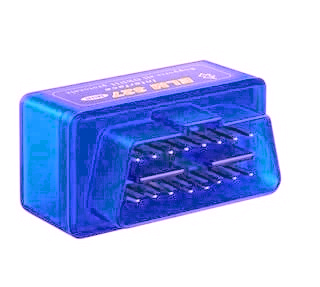

OBD logger

OBD logger

This project is still a work in progress.
The goal is to monitor the car’s internal values, such as temperature, pressure, O2 meter, etc… To then be able to determine potential faults over time, and observer patterns in the data for extrapolation of engine characteristics.
Furthermore, this unlocks the fault codes and the possibility of GPS logging, for analysis over time.
At the time of writing, a raspberry pi can connect to the OBD port, and log the desired values. The remote logging to a database is missing.
Here is the code I wrote for connecting the the OBD connector in python. Use as you want, in MIT licence.
import serial
from serial.tools import list_ports
import json
import numpy as np
class obd_serial:
"""
A serial interface for the OBD 2 protocol (https://en.wikipedia.org/wiki/OBD-II_PIDs)
This class will connect to the device when created.
:param device: (str) the OBD device (None for auto detect)
:param baud: (int) the baud rate for the serial connection (default=38400)
:param encoding: (str) the encoding type of the serial interface (default="ascii")
"""
def __init__(self, device=None, baud=38400, encoding="ascii"):
# use autodetect
if device is None:
print("auto-detecting device...")
devices = list_ports.comports()
if devices == []:
raise ValueError("Cannot find any available com device at a baud rate of {}.".format(baud))
found = False
for dev in devices:
valid, self.ser = self._check_serial(dev.device, baud)
if valid:
found = True
print("found ELM327 on {}\r\n".format(dev.device))
break
if not found:
raise ValueError("Cannot find valid ELM device at a baud rate of {}.".format(baud))
else:
valid, self.ser = self._check_serial(device, baud)
if not valid:
raise ValueError("Device {} is not a valid ELM device at a baud rate of {}.".format(device, baud))
self.encoding = encoding
self._obd_lookup = json.load(open("./obd_parsing.json", "r"))
@classmethod
def _check_serial(cls, dev, baud):
"""
checks the serial connection for an ELM327 chip
:param dev: (str) the device to check
:param baud: (int) the baud rate to check
:return: (bool, serial.Serial) return whether the serial port is valid, and if so the said connection
"""
try:
ser = serial.Serial(dev, baud, timeout=0.5)
try:
ser.write(b"atz\r\n")
ser.readline() # skip replay
if ser.readline().startswith(b"ELM327"):
ser.readline()
ser.readline()
ser.timeout = None
return (True, ser)
else:
return (False, None)
except serial.SerialException as e:
print(e)
ser.close()
return (False, None)
except serial.SerialException as e:
print(e)
return (False, None)
def _decoded_message(self, message, anwser):
"""
Transformes an OBD query, into clear elements
:param message: (str) the obd request
:param anwser: ([int]) the obd anwser in int format
:return: ({str: any}) the decoded obd anwser
"""
info = self._obd_lookup[message.upper()]
output = {"type": info["type"], "desc": info["desc"]}
if info["type"] in ["support", "action"]: # ignore
pass
elif info["type"] == "raw": # just print out
output["value"] = anwser
elif info["type"] == "choice": # choose one from many
found = False
for i in range(0, len(info["values"]), 2):
if info["values"][i] == str(anwser[0]):
output["value"] = info["values"][i+1]
found = True
break
if not found:
output["value"] = "INVALID VALUE '{}'".format(anwser[0])
elif info["type"] == "eq": # calculate from equation
output["value"] = []
output["unit"] = []
for i in range(0, len(info["values"]), 2):
output["value"] += eval(info["values"][i].format(*anwser))
output["unit"] += info["values"][i+1]
elif info["type"] == "bit": # bit flag
output["value"] = []
for i in range(0, len(info["values"]), 2):
# get the byte number A:0, B:1, C:2, ...
byte = anwser[ord(info["values"][i][0].upper())-65]
# get the associated bit, convert to boolean
cond = bool((byte//2**int(info["values"][i][1]))%2)
output["value"] += info["values"][i+1] + ": {}".format(cond)
else:
raise ValueError("Type {} not implemented".format(info["type"]))
return output
def _parse_message(self, message, anwser):
"""
Transformes an OBD query, into a human readable format.
:param message: (str) the obd request
:param anwser: ([int]) the obd anwser in int format
:return: (str) the parsed, human readable anwser
"""
info = self._decoded_message(message, anwser)
output = info["desc"]
if info["type"] in ["support", "action"]: # ignore
output += " (" + info["type"] + ")"
elif info["type"] == "raw": # just print out
output += "\r\n\t" + str(info["value"])
elif info["type"] == "choice": # choose one from many
output += "\r\n\t" + info["value"]
elif info["type"] == "eq": # calculate from equation
for i in range(len(info["value"])):
output += "\r\n\t" + str(info["value"][i]) + " " + info["unit"][i]
elif info["type"] == "bit": # bit flag
for i in range(len(info["value"])):
output += "\r\n\t" + info["value"][i]
else:
raise ValueError("Type {} not implemented".format(info["type"]))
return output
def close(self):
"""
Closes the OBD connection
"""
self.ser.close()
def _query(self, message):
"""
Queries a message and parses the output to raw hex
:param message: (str) the query message (hexadecimal) (https://en.wikipedia.org/wiki/OBD-II_PIDs)
:return: ([str]) return the full raw hex anwser
"""
try:
int(message, 16)
except ValueError:
raise ValueError("requested messsage '{}' invalid, must be hexadecimal format.".format(message))
enc_mess = bytes(message + "\r\n", self.encoding)
self.ser.write(enc_mess)
output = ""
char = self.ser.read().decode(self.encoding)
output += char
count = 0
while count < 4:
if char == "\r" and count % 2 == 0:
count += 1
elif char == "\n" and count % 2 == 1:
count += 1
else:
count = 0
char = self.ser.read().decode(self.encoding)
output += char
return "\r\n".join(output.split("\r\n")[1:-2])
def query_obd(self, message, output="human"):
"""
Queries the OBD with a given message, and sanitizes it.
Can raise a ValueError if the query is not supported, or not available.
You can choose the output type between string, int, hex and human readable.
:param message: (str) the query message (https://en.wikipedia.org/wiki/OBD-II_PIDs)
:param output: (str) the output format (can be "str", "int", "hex", "decoded" or "human") (default="human")
:return: ([int] or [str]) return the sanitizes anwser to the requested format
"""
anwser = self._query(message)
try:
if int(anwser.split(" ")[0], 16) != int(message[:2], 16) + int('40', 16): # must anwser correctly
raise ValueError("")
except ValueError:
raise ValueError("invalid anwser '{}' for query '{}'".format(anwser, message))
if output == "int":
return [int(a, 16) for a in anwser.split(" ")[2:-1]]
elif output == "hex":
return anwser.split(" ")[2:-1]
elif output == "decoded" and messsage.upper() in self._obd_lookup: # if not in lookup, return string output
return self._decoded_message(message, [int(a, 16) for a in anwser.split(" ")[2:-1]])
elif output == "human" and message.upper() in self._obd_lookup: # if not in lookup, return string output
return self._parse_message(message, [int(a, 16) for a in anwser.split(" ")[2:-1]])
else:
return anwser
def supported_pid(self, service="01"):
"""
Returns the supported pids for the requested service
:param service: (str) the requested service in hex (can be '01', '02', '05', and '09') (default="01")
:returns: ([str]) the supported hex pids for query
"""
if service not in ['01', '02', '05', '09']:
raise ValueError("Service '{}' does not support pid detection".format(service))
supported = ['00']
start = 1
while int(supported[-1], 16) % 32 == 0:
anwser = self.query_obd(service + supported[-1], "int")
pids = []
for byte in anwser:
pids += [bool(int(a)) for a in bin(byte)[2:].zfill(8)]
supported += [hex(a)[2:].zfill(2) for a in np.arange(start, 32 + start)[pids]]
start += 32
return supported
def query_all(self):
"""
Queries all the available pids for the 01 service,
and parses the to human readable format.
:returns: (str) the parsed queries
"""
output = ""
for pid in self.supported_pid("01"):
if self._obd_lookup[("01"+pid).upper()]["type"] not in ["action", "support"]:
try:
output += self.query_obd("01"+pid, "human")
except ValueError:
output += self._obd_lookup[("01"+pid).upper()]["desc"] + "\r\n\tNO DATA"
output += "\r\n-------------------------------\r\n"
return output
Ashley W.D. Hill
PhD Researcher Engineer specialized in machine learning applied to robotics
My research interests include Machine Learning, Robotics, Electronics, and other oddities.